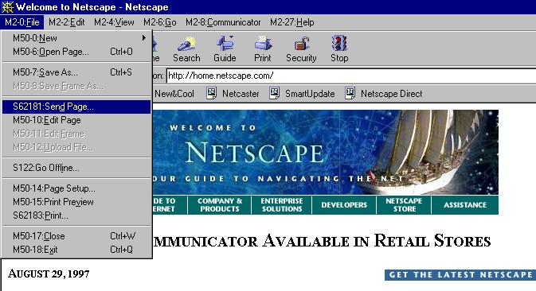

Example: D2298-3 = DIALOG2298Item3
NOTE: the idBuild is provided "AS IS" with no guarantees as to functionality, stability or fitness for any purpose. It may crash, or some features may not work due to the unexpected way in which the resources have been modified. Use it at your own risk.
To use the idBuild:
idBuild Main Menu

In the image above, you can see the Communicator's main menu and the toolbar buttons displayed with attached resource IDs. Note how most of the menu items begin with "M", telling you they are standard menu resources. However, a few begin "S", indicating they come from the stringtable resources. These require special attention when assigning pickletters.
If you see a string in the product itself (not a web page being displayed) that does not have a resource ID attached, there are 4 possibilities as it's origin:
1. It is part of a multipart string. For example, the toolbar buttons are made up of strings with 3 components, each separated by newline characters (\n ). The first part is the status bar message; this will have the resource ID. The second and third components are the tooltip (pop-up help message) and the button label itself. These won't show the resource ID because it is prepended to the first part.
2. The string comes from an RCDATA resource. For example, the Help menu contains a number of entries that come from CONFIG_PREFS. These are not touched by the idBuild generation process.
3. The string comes from an external source. For example, the idBuild doesn't contain the MFC resources, so any strings coming from MFC42.dll will be in there original form.
4. The string is hard-coded in the Netscape binary. There are still several strings that have not been resourced (for example, the Java Console is entirely hard-coded). You will not be able to localize these for this version.